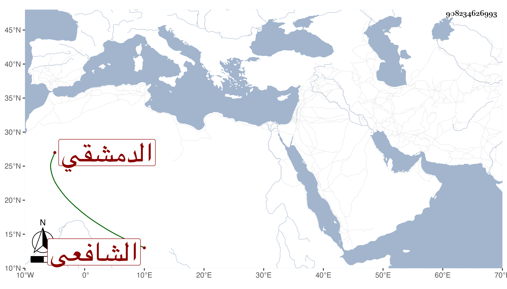

0902Sakhawi.DawLamic.ITO20230111-ara1.EIS1600.908234626993
Biography ID: 908234626993
378
عبد الوهاب بن عبد الرحمن بن محمد بن محمد بن محمد بن محمد بن محمد بن محمد تاج الدين الدمشقي الشافعي ويعرف بابن سويدان . ولد في يوم الأربعاء رابع عشر شوال سنة إحدى عشرة وثمانمائة وحفظ التنبيه والشاطبية واشتغل وكتب الصحيح ومعالم التنزيل وسمع الصحيحين على التقي الحريري بل وقرأ قطعة من آخر أحدهما على العلم البلقيني وأثني على قراءته ، وكان فاضلا متواضعا متزييا بزي الأجناد مع كثرة الكلام .
